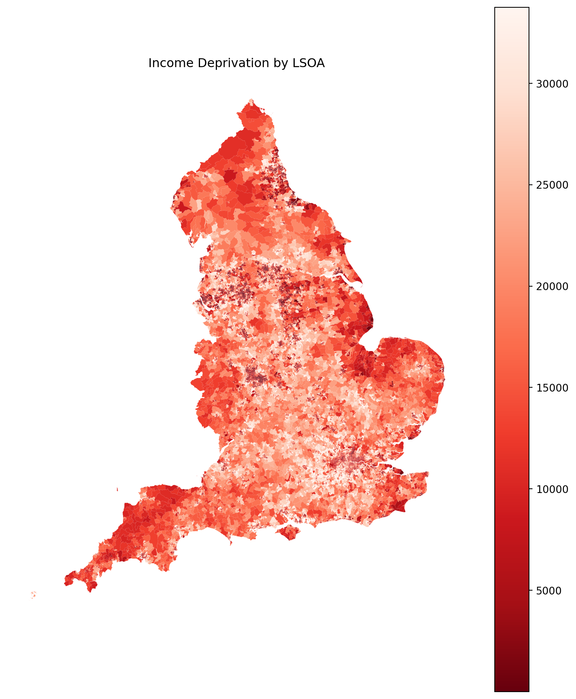
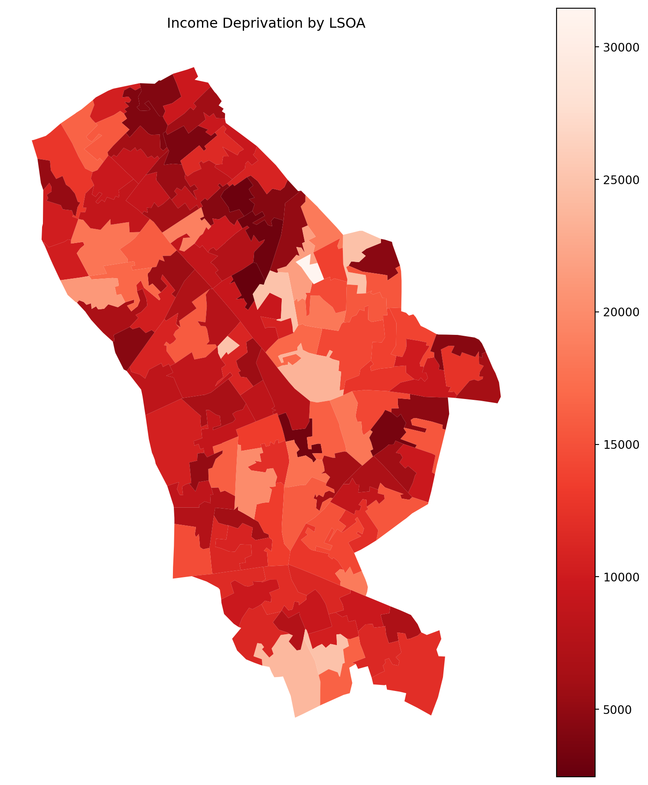

import pandas as pdxl = pd.ExcelFile('https://assets.publishing.service.gov.uk/media/691decfae39a085bda43efcd/File_2_IoD2025_Domains_of_Deprivation.xlsx')
xl.sheet_names['Notes', 'IoD2025 Domains']df.shape----------------------------------------------------------------- NameError Traceback (most recent call last) Cell In[3], line 1 ----> 1 df.shape NameError: name 'df' is not defined
df.columns----------------------------------------------------------------- NameError Traceback (most recent call last) Cell In[4], line 1 ----> 1 df.columns NameError: name 'df' is not defined
df = pd.read_excel('https://assets.publishing.service.gov.uk/media/691decfae39a085bda43efcd/File_2_IoD2025_Domains_of_Deprivation.xlsx',
sheet_name = 'IoD2025 Domains')df| LSOA code (2021) | LSOA name (2021) | Local Authority District code (2024) | Local Authority District name (2024) | Index of Multiple Deprivation (IMD) Rank (where 1 is most deprived) | Index of Multiple Deprivation (IMD) Decile (where 1 is most deprived 10% of LSOAs) | Income Rank (where 1 is most deprived) | Income Decile (where 1 is most deprived 10% of LSOAs) | Employment Rank (where 1 is most deprived) | Employment Decile (where 1 is most deprived 10% of LSOAs) | Education, Skills and Training Rank (where 1 is most deprived) | Education, Skills and Training Decile (where 1 is most deprived 10% of LSOAs) | Health Deprivation and Disability Rank (where 1 is most deprived) | Health Deprivation and Disability Decile (where 1 is most deprived 10% of LSOAs) | Crime Rank (where 1 is most deprived) | Crime Decile (where 1 is most deprived 10% of LSOAs) | Barriers to Housing and Services Rank (where 1 is most deprived) | Barriers to Housing and Services Decile (where 1 is most deprived 10% of LSOAs) | Living Environment Rank (where 1 is most deprived) | Living Environment Decile (where 1 is most deprived 10% of LSOAs) | |
|---|---|---|---|---|---|---|---|---|---|---|---|---|---|---|---|---|---|---|---|---|
| 0 | E01000001 | City of London 001A | E09000001 | City of London | 26525 | 8 | 33730 | 10 | 33708 | 10 | 33755 | 10 | 33108 | 10 | 33698 | 10 | 29220 | 9 | 244 | 1 |
| 1 | E01000002 | City of London 001B | E09000001 | City of London | 31203 | 10 | 33669 | 10 | 33734 | 10 | 33672 | 10 | 32574 | 10 | 33712 | 10 | 32640 | 10 | 3702 | 2 |
| 2 | E01000003 | City of London 001C | E09000001 | City of London | 25913 | 8 | 25167 | 8 | 26985 | 8 | 30273 | 9 | 20719 | 7 | 27325 | 9 | 30400 | 10 | 4540 | 2 |
| 3 | E01000005 | City of London 001E | E09000001 | City of London | 14807 | 5 | 14836 | 5 | 17911 | 6 | 15886 | 5 | 10458 | 4 | 25630 | 8 | 11294 | 4 | 5403 | 2 |
| 4 | E01000006 | Barking and Dagenham 016A | E09000002 | Barking and Dagenham | 10917 | 4 | 7519 | 3 | 15286 | 5 | 11134 | 4 | 21901 | 7 | 17875 | 6 | 2745 | 1 | 9479 | 3 |
| ... | ... | ... | ... | ... | ... | ... | ... | ... | ... | ... | ... | ... | ... | ... | ... | ... | ... | ... | ... | ... |
| 33750 | E01035758 | Vale of White Horse 014H | E07000180 | Vale of White Horse | 27536 | 9 | 25934 | 8 | 24575 | 8 | 21842 | 7 | 29534 | 9 | 13583 | 5 | 23743 | 8 | 25435 | 8 |
| 33751 | E01035759 | Vale of White Horse 015G | E07000180 | Vale of White Horse | 27902 | 9 | 26440 | 8 | 22891 | 7 | 25326 | 8 | 25671 | 8 | 30130 | 9 | 12406 | 4 | 28626 | 9 |
| 33752 | E01035760 | Vale of White Horse 015H | E07000180 | Vale of White Horse | 27532 | 9 | 18127 | 6 | 26383 | 8 | 22625 | 7 | 26857 | 8 | 19110 | 6 | 30084 | 9 | 31180 | 10 |
| 33753 | E01035761 | Vale of White Horse 015I | E07000180 | Vale of White Horse | 28981 | 9 | 21596 | 7 | 29547 | 9 | 24267 | 8 | 28925 | 9 | 24825 | 8 | 18053 | 6 | 29506 | 9 |
| 33754 | E01035762 | West Oxfordshire 004H | E07000181 | West Oxfordshire | 24000 | 8 | 25268 | 8 | 27768 | 9 | 27632 | 9 | 24699 | 8 | 29743 | 9 | 3842 | 2 | 12562 | 4 |
33755 rows × 20 columns
# Summary stats - like summary() in R
df.describe()| Index of Multiple Deprivation (IMD) Rank (where 1 is most deprived) | Index of Multiple Deprivation (IMD) Decile (where 1 is most deprived 10% of LSOAs) | Income Rank (where 1 is most deprived) | Income Decile (where 1 is most deprived 10% of LSOAs) | Employment Rank (where 1 is most deprived) | Employment Decile (where 1 is most deprived 10% of LSOAs) | Education, Skills and Training Rank (where 1 is most deprived) | Education, Skills and Training Decile (where 1 is most deprived 10% of LSOAs) | Health Deprivation and Disability Rank (where 1 is most deprived) | Health Deprivation and Disability Decile (where 1 is most deprived 10% of LSOAs) | Crime Rank (where 1 is most deprived) | Crime Decile (where 1 is most deprived 10% of LSOAs) | Barriers to Housing and Services Rank (where 1 is most deprived) | Barriers to Housing and Services Decile (where 1 is most deprived 10% of LSOAs) | Living Environment Rank (where 1 is most deprived) | Living Environment Decile (where 1 is most deprived 10% of LSOAs) | |
|---|---|---|---|---|---|---|---|---|---|---|---|---|---|---|---|---|
| count | 33755.000000 | 33755.000000 | 33755.000000 | 33755.000000 | 33755.000000 | 33755.000000 | 33755.000000 | 33755.000000 | 33755.000000 | 33755.000000 | 33755.000000 | 33755.000000 | 33755.000000 | 33755.000000 | 33755.000000 | 33755.000000 |
| mean | 16878.000000 | 5.500074 | 16877.999911 | 5.500074 | 16878.000000 | 5.500074 | 16877.999970 | 5.500074 | 16878.000000 | 5.500074 | 16878.000000 | 5.500074 | 16877.999970 | 5.500074 | 16878.000000 | 5.500074 |
| std | 9744.373505 | 2.872324 | 9744.373406 | 2.872324 | 9744.373505 | 2.872324 | 9744.373541 | 2.872324 | 9744.373505 | 2.872324 | 9744.373505 | 2.872324 | 9744.373516 | 2.872324 | 9744.373505 | 2.872324 |
| min | 1.000000 | 1.000000 | 1.000000 | 1.000000 | 1.000000 | 1.000000 | 1.000000 | 1.000000 | 1.000000 | 1.000000 | 1.000000 | 1.000000 | 1.000000 | 1.000000 | 1.000000 | 1.000000 |
| 25% | 8439.500000 | 3.000000 | 8439.500000 | 3.000000 | 8439.500000 | 3.000000 | 8439.500000 | 3.000000 | 8439.500000 | 3.000000 | 8439.500000 | 3.000000 | 8439.500000 | 3.000000 | 8439.500000 | 3.000000 |
| 50% | 16878.000000 | 6.000000 | 16878.000000 | 6.000000 | 16878.000000 | 6.000000 | 16878.000000 | 6.000000 | 16878.000000 | 6.000000 | 16878.000000 | 6.000000 | 16878.000000 | 6.000000 | 16878.000000 | 6.000000 |
| 75% | 25316.500000 | 8.000000 | 25316.500000 | 8.000000 | 25316.500000 | 8.000000 | 25316.500000 | 8.000000 | 25316.500000 | 8.000000 | 25316.500000 | 8.000000 | 25316.500000 | 8.000000 | 25316.500000 | 8.000000 |
| max | 33755.000000 | 10.000000 | 33755.000000 | 10.000000 | 33755.000000 | 10.000000 | 33755.000000 | 10.000000 | 33755.000000 | 10.000000 | 33755.000000 | 10.000000 | 33755.000000 | 10.000000 | 33755.000000 | 10.000000 |
import geopandas as gpd
boundaries = gpd.read_file('/Users/joecrowley/Downloads/Lower_layer_Super_Output_Areas_December_2021_Boundaries_EW_BGC_V5_-3761339731474027792.geojson')
# boundaries = gpd.read_file('https://services1.arcgis.com/ESMARspQHYMw9BZ9/arcgis/rest/services/Lower_layer_Super_Output_Areas_December_2021_Boundaries_EW_BGC_V5/FeatureServer/0/query?outFields=*&where=1%3D1&f=geojson')
# boundaries = gpd.read_file('https://services1.arcgis.com/ESMARspQHYMw9BZ9/arcgis/rest/services/LSOA_Dec_2021_Boundaries_Generalised_Clipped_BGC_EW_V2/FeatureServer/0/query?where=1%3D1&outFields=LSOA21CD&outSR=4326&f=geojson')
boundaries.shape(35672, 10)boundaries| FID | LSOA21CD | LSOA21NM | LSOA21NMW | BNG_E | BNG_N | LAT | LONG | GlobalID | geometry | |
|---|---|---|---|---|---|---|---|---|---|---|
| 0 | 1 | E01000001 | City of London 001A | 532123 | 181632 | 51.51817 | -0.097150 | 86214465-5cf4-4e8f-9492-3667471c42d6 | POLYGON ((-0.09726 51.52157, -0.09649 51.52028... | |
| 1 | 2 | E01000002 | City of London 001B | 532480 | 181715 | 51.51883 | -0.091970 | cd40c491-6567-405f-8c18-426e17b356ce | POLYGON ((-0.08967 51.52069, -0.08992 51.51998... | |
| 2 | 3 | E01000003 | City of London 001C | 532239 | 182033 | 51.52174 | -0.095330 | 7fd27aaf-d858-4e46-9099-92b43f66b948 | POLYGON ((-0.09676 51.52325, -0.09644 51.52282... | |
| 3 | 4 | E01000005 | City of London 001E | 533581 | 181283 | 51.51469 | -0.076280 | 7e76a16a-028f-4f49-84b5-6e5a67322f3c | POLYGON ((-0.0732 51.51, -0.07551 51.50974, -0... | |
| 4 | 5 | E01000006 | Barking and Dagenham 016A | 544994 | 184274 | 51.53875 | 0.089317 | 25ab047e-6fcf-4f76-9176-e92e44c0e097 | POLYGON ((0.09118 51.53909, 0.09328 51.53787, ... | |
| ... | ... | ... | ... | ... | ... | ... | ... | ... | ... | ... |
| 35667 | 35668 | W01002036 | Vale of Glamorgan 005G | Bro Morgannwg 005G | 317939 | 172435 | 51.44494 | -3.182180 | 085e774d-241b-4061-a952-2eab598ccdfb | POLYGON ((-3.18518 51.44735, -3.18319 51.44728... |
| 35668 | 35669 | W01002037 | Vale of Glamorgan 005H | Bro Morgannwg 005H | 318527 | 172406 | 51.44476 | -3.173710 | 8e43fa39-9f6f-4055-b3f1-1109629aaf1e | POLYGON ((-3.16647 51.44662, -3.16682 51.44628... |
| 35669 | 35670 | W01002038 | Vale of Glamorgan 014G | Bro Morgannwg 014G | 306491 | 167360 | 51.39754 | -3.345520 | 259f2641-7249-4699-b058-09fd3b799932 | POLYGON ((-3.34742 51.41025, -3.34769 51.40879... |
| 35670 | 35671 | W01002039 | Vale of Glamorgan 014H | Bro Morgannwg 014H | 306564 | 166023 | 51.38553 | -3.344120 | bdbb35ba-cf29-4cea-8000-b8b4d3177128 | POLYGON ((-3.34057 51.39003, -3.34019 51.38885... |
| 35671 | 35672 | W01002040 | Vale of Glamorgan 015F | Bro Morgannwg 015F | 311423 | 167179 | 51.39670 | -3.274600 | 93e1147b-2c03-4514-b140-9df9f1f4c43e | POLYGON ((-3.26688 51.40014, -3.26541 51.40005... |
35672 rows × 10 columns
# Merge boundaries with deprivation data
merged = boundaries.merge(df, left_on='LSOA21CD', right_on='LSOA code (2021)')merged| FID | LSOA21CD | LSOA21NM | LSOA21NMW | BNG_E | BNG_N | LAT | LONG | GlobalID | geometry | ... | Education, Skills and Training Rank (where 1 is most deprived) | Education, Skills and Training Decile (where 1 is most deprived 10% of LSOAs) | Health Deprivation and Disability Rank (where 1 is most deprived) | Health Deprivation and Disability Decile (where 1 is most deprived 10% of LSOAs) | Crime Rank (where 1 is most deprived) | Crime Decile (where 1 is most deprived 10% of LSOAs) | Barriers to Housing and Services Rank (where 1 is most deprived) | Barriers to Housing and Services Decile (where 1 is most deprived 10% of LSOAs) | Living Environment Rank (where 1 is most deprived) | Living Environment Decile (where 1 is most deprived 10% of LSOAs) | |
|---|---|---|---|---|---|---|---|---|---|---|---|---|---|---|---|---|---|---|---|---|---|
| 0 | 1 | E01000001 | City of London 001A | 532123 | 181632 | 51.51817 | -0.097150 | 86214465-5cf4-4e8f-9492-3667471c42d6 | POLYGON ((-0.09726 51.52157, -0.09649 51.52028... | ... | 33755 | 10 | 33108 | 10 | 33698 | 10 | 29220 | 9 | 244 | 1 | |
| 1 | 2 | E01000002 | City of London 001B | 532480 | 181715 | 51.51883 | -0.091970 | cd40c491-6567-405f-8c18-426e17b356ce | POLYGON ((-0.08967 51.52069, -0.08992 51.51998... | ... | 33672 | 10 | 32574 | 10 | 33712 | 10 | 32640 | 10 | 3702 | 2 | |
| 2 | 3 | E01000003 | City of London 001C | 532239 | 182033 | 51.52174 | -0.095330 | 7fd27aaf-d858-4e46-9099-92b43f66b948 | POLYGON ((-0.09676 51.52325, -0.09644 51.52282... | ... | 30273 | 9 | 20719 | 7 | 27325 | 9 | 30400 | 10 | 4540 | 2 | |
| 3 | 4 | E01000005 | City of London 001E | 533581 | 181283 | 51.51469 | -0.076280 | 7e76a16a-028f-4f49-84b5-6e5a67322f3c | POLYGON ((-0.0732 51.51, -0.07551 51.50974, -0... | ... | 15886 | 5 | 10458 | 4 | 25630 | 8 | 11294 | 4 | 5403 | 2 | |
| 4 | 5 | E01000006 | Barking and Dagenham 016A | 544994 | 184274 | 51.53875 | 0.089317 | 25ab047e-6fcf-4f76-9176-e92e44c0e097 | POLYGON ((0.09118 51.53909, 0.09328 51.53787, ... | ... | 11134 | 4 | 21901 | 7 | 17875 | 6 | 2745 | 1 | 9479 | 3 | |
| ... | ... | ... | ... | ... | ... | ... | ... | ... | ... | ... | ... | ... | ... | ... | ... | ... | ... | ... | ... | ... | ... |
| 33750 | 33751 | E01035758 | Vale of White Horse 014H | 439310 | 187522 | 51.58519 | -1.434010 | 2d1106fa-8a33-4fa0-bb64-582415ddf88a | POLYGON ((-1.42362 51.5927, -1.42361 51.59164,... | ... | 21842 | 7 | 29534 | 9 | 13583 | 5 | 23743 | 8 | 25435 | 8 | |
| 33751 | 33752 | E01035759 | Vale of White Horse 015G | 448893 | 192090 | 51.62551 | -1.295070 | bb39a0da-bf27-4920-98f0-15a91d81ee65 | POLYGON ((-1.29434 51.63645, -1.29203 51.6352,... | ... | 25326 | 8 | 25671 | 8 | 30130 | 9 | 12406 | 4 | 28626 | 9 | |
| 33752 | 33753 | E01035760 | Vale of White Horse 015H | 450112 | 190802 | 51.61383 | -1.277650 | 9b40a278-3c59-4a77-8e5f-1e15f0f33e22 | POLYGON ((-1.26912 51.60851, -1.26574 51.60713... | ... | 22625 | 7 | 26857 | 8 | 19110 | 6 | 30084 | 9 | 31180 | 10 | |
| 33753 | 33754 | E01035761 | Vale of White Horse 015I | 448578 | 188787 | 51.59584 | -1.300080 | 47960f34-3a14-4662-9996-be2ba5e88c9a | POLYGON ((-1.2939 51.60153, -1.29426 51.60068,... | ... | 24267 | 8 | 28925 | 9 | 24825 | 8 | 18053 | 6 | 29506 | 9 | |
| 33754 | 33755 | E01035762 | West Oxfordshire 004H | 446065 | 221410 | 51.88936 | -1.332050 | a6b3ba0a-0e83-4b00-8fcd-e70258b71c90 | POLYGON ((-1.32472 51.92251, -1.31802 51.92178... | ... | 27632 | 9 | 24699 | 8 | 29743 | 9 | 3842 | 2 | 12562 | 4 |
33755 rows × 30 columns
df.columnsIndex(['LSOA code (2021)', 'LSOA name (2021)',
'Local Authority District code (2024)',
'Local Authority District name (2024)',
'Index of Multiple Deprivation (IMD) Rank (where 1 is most deprived)',
'Index of Multiple Deprivation (IMD) Decile (where 1 is most deprived 10% of LSOAs)',
'Income Rank (where 1 is most deprived)',
'Income Decile (where 1 is most deprived 10% of LSOAs)',
'Employment Rank (where 1 is most deprived)',
'Employment Decile (where 1 is most deprived 10% of LSOAs)',
'Education, Skills and Training Rank (where 1 is most deprived)',
'Education, Skills and Training Decile (where 1 is most deprived 10% of LSOAs)',
'Health Deprivation and Disability Rank (where 1 is most deprived)',
'Health Deprivation and Disability Decile (where 1 is most deprived 10% of LSOAs)',
'Crime Rank (where 1 is most deprived)',
'Crime Decile (where 1 is most deprived 10% of LSOAs)',
'Barriers to Housing and Services Rank (where 1 is most deprived)',
'Barriers to Housing and Services Decile (where 1 is most deprived 10% of LSOAs)',
'Living Environment Rank (where 1 is most deprived)',
'Living Environment Decile (where 1 is most deprived 10% of LSOAs)'],
dtype='str')# Plot - pick a deprivation column to shade by
import matplotlib.pyplot as plt
merged.plot(column='Index of Multiple Deprivation (IMD) Rank (where 1 is most deprived)', cmap='Reds_r', figsize=(10, 12), legend=True)
plt.title('Income Deprivation by LSOA')
plt.axis('off')
plt.show()
for la in sorted(merged['Local Authority District name (2024)'].dropna().unique()):
print(la)Adur
Amber Valley
Arun
Ashfield
Ashford
Babergh
Barking and Dagenham
Barnet
Barnsley
Basildon
Basingstoke and Deane
Bassetlaw
Bath and North East Somerset
Bedford
Bexley
Birmingham
Blaby
Blackburn with Darwen
Blackpool
Bolsover
Bolton
Boston
Bournemouth, Christchurch and Poole
Bracknell Forest
Bradford
Braintree
Breckland
Brent
Brentwood
Brighton and Hove
Bristol, City of
Broadland
Bromley
Bromsgrove
Broxbourne
Broxtowe
Buckinghamshire
Burnley
Bury
Calderdale
Cambridge
Camden
Cannock Chase
Canterbury
Castle Point
Central Bedfordshire
Charnwood
Chelmsford
Cheltenham
Cherwell
Cheshire East
Cheshire West and Chester
Chesterfield
Chichester
Chorley
City of London
Colchester
Cornwall
Cotswold
County Durham
Coventry
Crawley
Croydon
Cumberland
Dacorum
Darlington
Dartford
Derby
Derbyshire Dales
Doncaster
Dorset
Dover
Dudley
Ealing
East Cambridgeshire
East Devon
East Hampshire
East Hertfordshire
East Lindsey
East Riding of Yorkshire
East Staffordshire
East Suffolk
Eastbourne
Eastleigh
Elmbridge
Enfield
Epping Forest
Epsom and Ewell
Erewash
Exeter
Fareham
Fenland
Folkestone and Hythe
Forest of Dean
Fylde
Gateshead
Gedling
Gloucester
Gosport
Gravesham
Great Yarmouth
Greenwich
Guildford
Hackney
Halton
Hammersmith and Fulham
Harborough
Haringey
Harlow
Harrow
Hart
Hartlepool
Hastings
Havant
Havering
Herefordshire, County of
Hertsmere
High Peak
Hillingdon
Hinckley and Bosworth
Horsham
Hounslow
Huntingdonshire
Hyndburn
Ipswich
Isle of Wight
Isles of Scilly
Islington
Kensington and Chelsea
King's Lynn and West Norfolk
Kingston upon Hull, City of
Kingston upon Thames
Kirklees
Knowsley
Lambeth
Lancaster
Leeds
Leicester
Lewes
Lewisham
Lichfield
Lincoln
Liverpool
Luton
Maidstone
Maldon
Malvern Hills
Manchester
Mansfield
Medway
Melton
Merton
Mid Devon
Mid Suffolk
Mid Sussex
Middlesbrough
Milton Keynes
Mole Valley
New Forest
Newark and Sherwood
Newcastle upon Tyne
Newcastle-under-Lyme
Newham
North Devon
North East Derbyshire
North East Lincolnshire
North Hertfordshire
North Kesteven
North Lincolnshire
North Norfolk
North Northamptonshire
North Somerset
North Tyneside
North Warwickshire
North West Leicestershire
North Yorkshire
Northumberland
Norwich
Nottingham
Nuneaton and Bedworth
Oadby and Wigston
Oldham
Oxford
Pendle
Peterborough
Plymouth
Portsmouth
Preston
Reading
Redbridge
Redcar and Cleveland
Redditch
Reigate and Banstead
Ribble Valley
Richmond upon Thames
Rochdale
Rochford
Rossendale
Rother
Rotherham
Rugby
Runnymede
Rushcliffe
Rushmoor
Rutland
Salford
Sandwell
Sefton
Sevenoaks
Sheffield
Shropshire
Slough
Solihull
Somerset
South Cambridgeshire
South Derbyshire
South Gloucestershire
South Hams
South Holland
South Kesteven
South Norfolk
South Oxfordshire
South Ribble
South Staffordshire
South Tyneside
Southampton
Southend-on-Sea
Southwark
Spelthorne
St Albans
St. Helens
Stafford
Staffordshire Moorlands
Stevenage
Stockport
Stockton-on-Tees
Stoke-on-Trent
Stratford-on-Avon
Stroud
Sunderland
Surrey Heath
Sutton
Swale
Swindon
Tameside
Tamworth
Tandridge
Teignbridge
Telford and Wrekin
Tendring
Test Valley
Tewkesbury
Thanet
Three Rivers
Thurrock
Tonbridge and Malling
Torbay
Torridge
Tower Hamlets
Trafford
Tunbridge Wells
Uttlesford
Vale of White Horse
Wakefield
Walsall
Waltham Forest
Wandsworth
Warrington
Warwick
Watford
Waverley
Wealden
Welwyn Hatfield
West Berkshire
West Devon
West Lancashire
West Lindsey
West Northamptonshire
West Oxfordshire
West Suffolk
Westminster
Westmorland and Furness
Wigan
Wiltshire
Winchester
Windsor and Maidenhead
Wirral
Woking
Wokingham
Wolverhampton
Worcester
Worthing
Wychavon
Wyre
Wyre Forest
Yorkislington = merged[merged['Local Authority District name (2024)'] == 'Islington']
islington.shape(126, 30)# Plot - pick a deprivation column to shade by
islington.plot(column='Index of Multiple Deprivation (IMD) Rank (where 1 is most deprived)', cmap='Reds_r', figsize=(10, 12), legend=True)
plt.title('Income Deprivation by LSOA')
plt.axis('off')
plt.show()